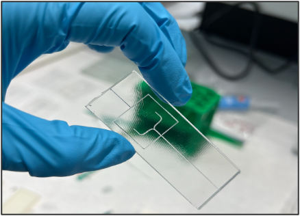
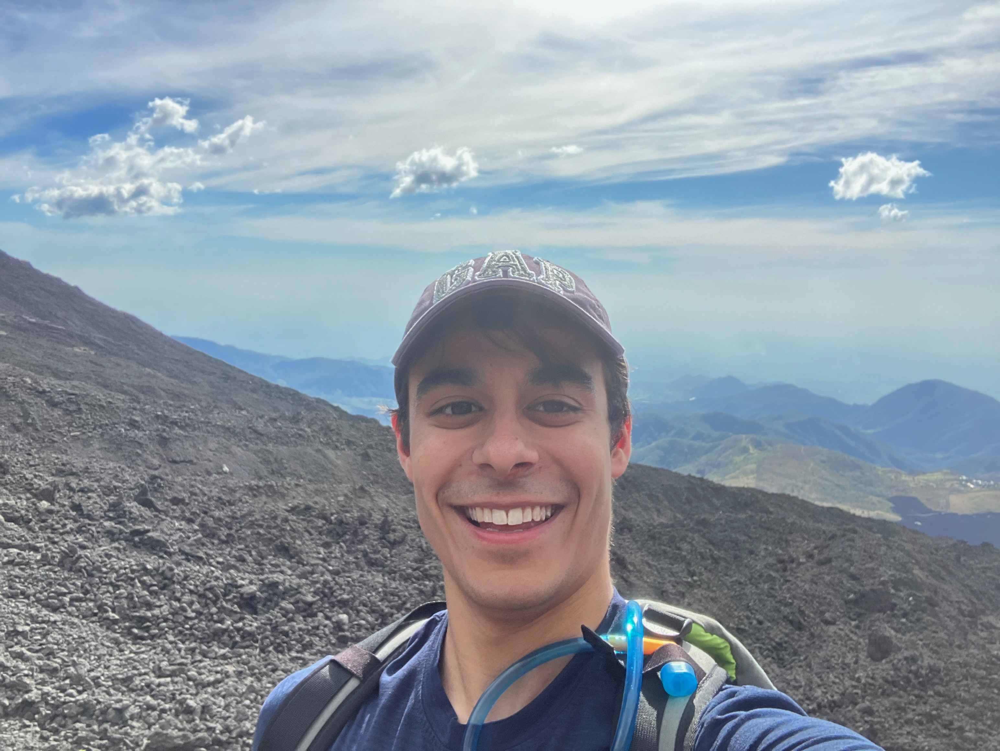
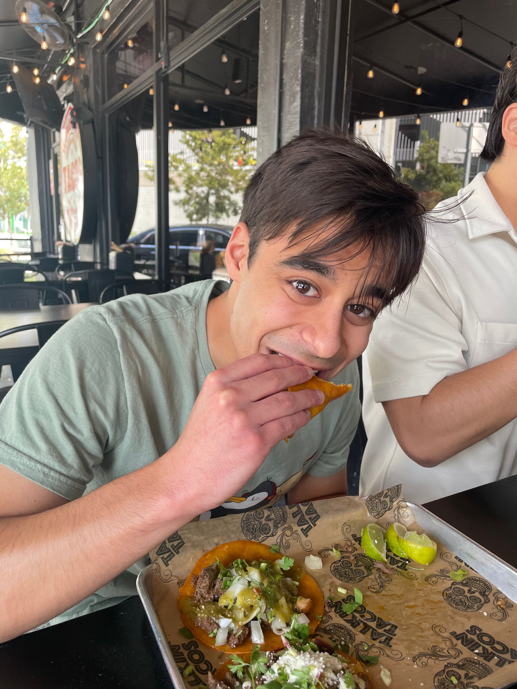
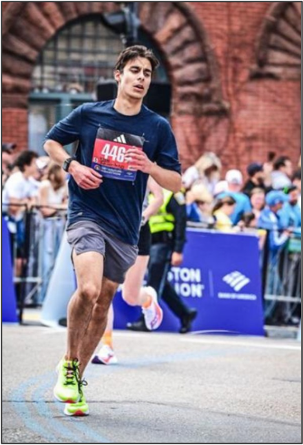
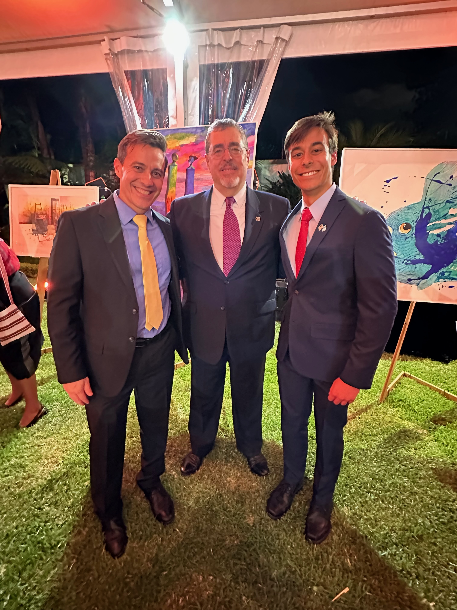
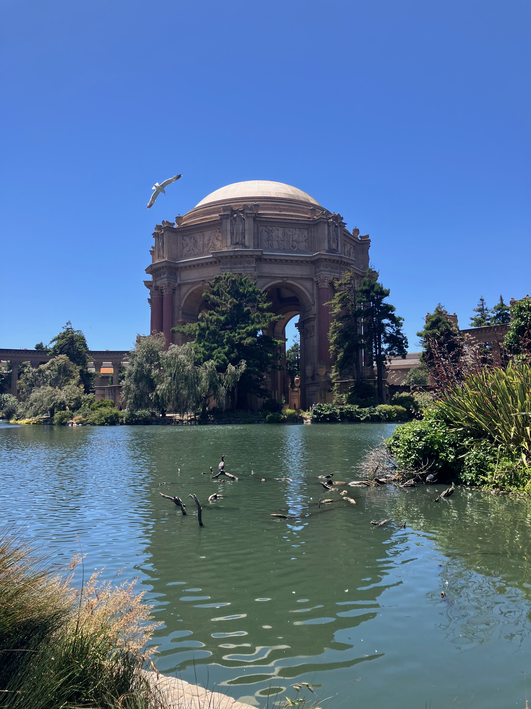
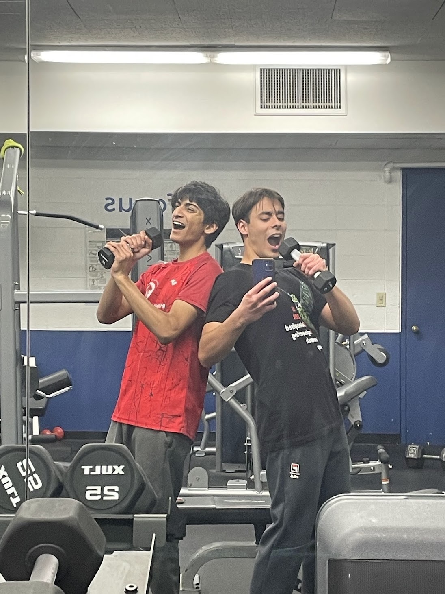

<div class="textcontainer">
<div class="card-grid">
<div class="card">

<div class="card-caption">A microfluidic chip I made last summer to trap HUVECs cells in oil bubbles.</div>
</div>
<div class="card">

<div class="card-caption">A selfie at the summit of the Pacaya volcano in Guatemala.</div>
</div>
<div class="card">

<div class="card-caption">Me big-backing in Miami.</div>
</div>
</div>
<div class="about-container">
<p id="aboutme">
I am a Junior studying electrical engineering and living in Quincy house. I am interested in A LOT of different things: 1) creating point-of-care, affordable technologies for medical diagnosis; 2) finding new tools to study aging biology; and 3) inventing practical technologies for my dorm room (usually motivated by laziness). After college, my goal is to work on technologies that can improve the human healthspan.
</p>
<div class="race-photo">

<div class="race-caption">Me dying during the Boston Marathon in 2024.</div>
</div>
</div>
<div class="card-grid">
<div class="card">

<div class="card-caption">Me with my dad (left) and the president of Guatemala (center).</div>
</div>
<div class="card">
<img src="IMG_9823.jpg" alt="Holi">
<div class="card-caption">Me celebrating Holi with my friends Milan and Joey.</div>
</div>
<div class="card">

<div class="card-caption">A photo I shot of San Fransico.</div>
</div>
</div>
In my free time, I love camping, running with friends, and playing poker (though I'm not a very good bluffer). I am half Indian and half Irish but I have lived all around the world as part of a diplomatic family. I was born in India, then lived in Bolivia, Colombia, the U.S., Singapore, Canada, and Guatemala before Harvard. The photo on the left above is me with my dad (left) and the president of Guatemala (center), whom I got to meet during a summer working at the embassy in Guatemala. I really wish I had checked my hair before that photo :D ...
My goal for this semester is to build more stuff, here's what I've built so far:
I am also quite silly...
<div class="media-row">

<div class="video-container">
<video controls>
<source src="IMG_3797.mp4" type="video/mp4">
Your browser does not support the video tag.
</video>
<div class="video-caption">Here is a video of Coatis shot in Tikal National Park in Guatemala.</div>
</div>
</div>
<p> <a href="./index.html" class="btn">Return Home</a> <p>
</div>